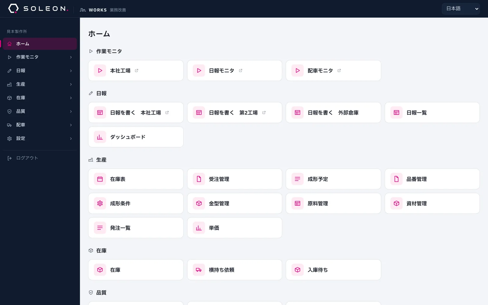
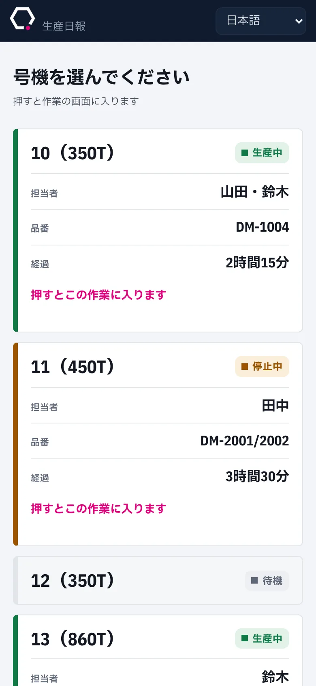
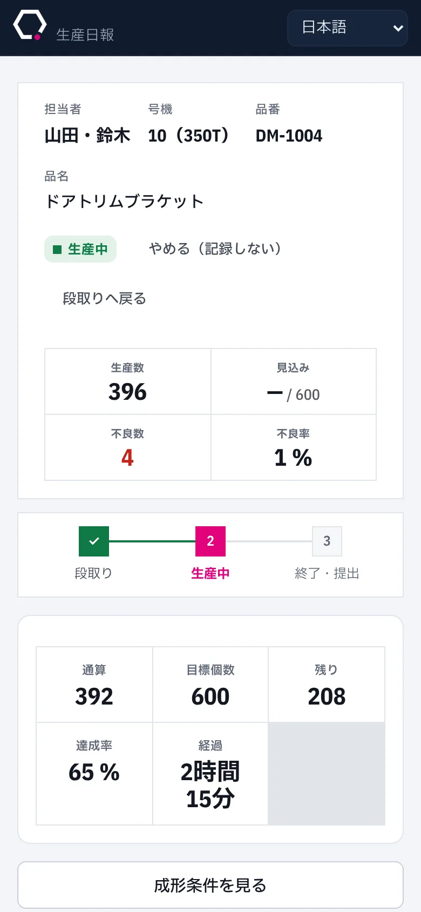
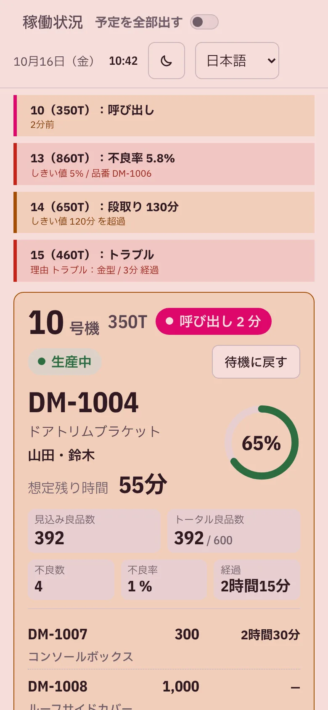
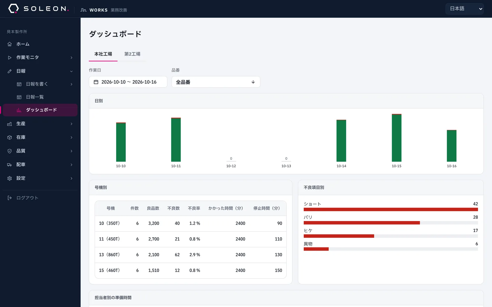

株式会社SOLEON のご紹介
御社の仕事に合わせて、専用の道具をつくります。
紙・Excel・手作業でやっていることを、会社ごとの画面に。
資料の画面はすべてテストデータです
よく聞くお話
こんなこと、ありませんか。
- 同じ数字を、何度も書き写しているFAX で届いた注文を Excel に打ち直し、さらに別の表にも写している
- その人しか分からない Excel がある担当の人が休むと、どこに何があるか誰も分からない
- 集計に時間がかかる数字がまとまるのは月末。気づいたときには遅い
- 市販のソフトが合わなかった項目が足りない、使わない機能ばかり、結局 Excel に戻った
- 現場の様子が、行かないと分からないいま誰が何をしているかを、聞いて回っている
SOLEON がすること
お話を聞いて、その会社のための画面を作ります。
市販のソフト
- 決まった形に、仕事のやり方を合わせる
- 使わない機能も含めて覚える
- 合わないところは、手作業で補う
SOLEON のオーダーメイド
- いまの仕事のやり方に、画面を合わせる
- その会社で使うものだけを置く
- 使いながら出てきた要望を、足していく
作ったものの例
ある成形工場のために作った道具です。
注文・在庫・生産の予定・日報・品質の記録を、1つの画面にまとめました。工場の事務所と現場で、毎日使われています。
ここから、何ができるようになったかをご紹介します。

例 1
注文書を置くと、作る数が出る
届いた注文書（PDF・Excel・FAX の写真）を置くだけで、数を読み取ります。いまの在庫と合わせて、品番ごとに「あといくつ作るか」「いつ在庫が切れるか」が出ます。

例 2
工場の様子が、壁の画面で分かる
どの機械で何を作っていて、あとどれくらいで終わるか。呼び出しや不良の増えすぎは、色で知らせます。見に行かなくても、事務所から分かります。

例 3
現場の日報は、スマホやタブレットで
機械を選んで、数を入れて、提出するだけ。パソコンに慣れていない人も、その日から使えています。
外国から来た人のために、言葉も切り替えられるようにしました。
日本語Tiếng ViệtFilipinoEnglish



例 4
集計は、その場で見られる
日報に入った数が、そのまま集計になります。日ごと・機械ごと・不良の種類ごとに、月末を待たずに比べられます。

この工場で変わったこと
手でやっていたことが、画面でつながりました。
これまでいま
注文書を見て、Excel に打ち直す注文書を置くと、数が入る
在庫を数えて、作る数を計算する作る数と、在庫が切れる日が出る
ホワイトボードに予定を書く予定が並び、壁の画面とタブレットに出る
紙の日報を、あとで集計する入れた数が、そのまま在庫と集計に入る
現場に行って様子を聞く事務所の画面で分かる
ほかにも作ってきたもの
会社の「いつもの作業」なら、たいてい画面にできます。
- 在庫の管理
- 拠点ごとの入荷・出荷・棚卸
- 発注の一覧
- 材料や部品を、だれがいつ頼んだか
- 購入の申請と承認
- 申請・承認・差し戻しをチャットに通知
- 作業の手順書
- 写真入りの手順書を品番ごとに
- 不良の写真
- 現場で撮って、そのまま共有
- 配車の予定
- だれが、いつ、どこへ運ぶか
- 作業服などの支給
- だれに何を渡したかの記録
- 点検の記録
- 始業点検と不具合の報告
- データの取り出し
- いつでも Excel で開ける形に
進め方
難しい準備はいりません。いまのやり方を見せてください。
- 1お話を聞く困っていること、いま使っている紙や Excel を見せてもらう
- 2見本を作る実際の画面に近い見本で、形を一緒に決める
- 3使ってもらうまず動くものを置き、現場で試してもらう
- 4直し続ける使って出てきた声を見ながら、足していく
使うときのこと
特別な機械やソフトは、いりません。
- いまある機械で使えますパソコン・タブレット・スマホのブラウザで開くだけ。インストールは要りません
- 見せる人を選べます値段のような数字は、見られる人を決めておけます
- 人の追加は、画面から人の追加や見られる範囲の変更は、管理する人が画面でできます
- データは、いつでも取り出せます入れたものは Excel で開ける形で落とせます